Diverse Figures in Technology History
Women, people of color, and LGBTQ folks in technology history.
Contents
Multi-Category
Humans are complicated - some folks fit in more than one of our
categories. So we made a new one just for them!
Edith Windsor (LGBTQ/woman)
Edith “Edie” Windsor is best known as a gay rights activist who was the
lead plaintiff in the landmark Supreme Court Case United States v.
Windsor, which overturned Section 3 of the Defense of Marriage Act (DOMA)
and led to the legalization of gay marriage. What’s less well known is
that Windsor was a computer programmer and an engineer, working with the
UNIVAC at Combustion Engineering, Inc., and later at IBM in the 1950s and
’60s, eventually becoming a senior systems engineer.
Sophie Wilson (LGBTQ/woman)
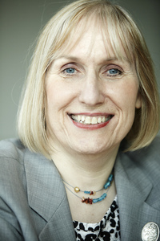
Sophie Wilson studied computer science at Cambridge University, and while
on summer vacation she designed a microcomputer used to control feed for
cows. In the early days of her career she worked for Acorn Computers,
where she contributed to the design of the Acorn System 1, an early 8-bit
computer released in 1979, and later the BBC Micro, which proved hugely
successful in the UK. Wilson is best known for her development of the
Acorn RISC Machine (ARM) processor, still used today in 21st century
smartphones. Wilson is a transgender woman.
Mary Ann Horton (LGBTQ/woman)
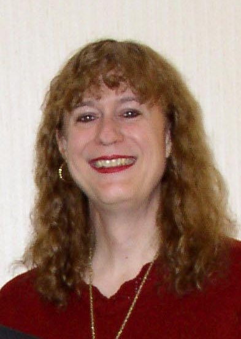
LGBT computer science pioneer earned her Ph.D. in computer science from
Berkeley in 1981, where she contributed to the development of Berkeley
UNIX, which led to the growth of the Usenet in the 1980s. Horton is a
transgender woman who, in addition to her contributions to technology, has
also made significant contributions to transgender rights in the
workplace. In 1997 she asked her then employer Lucent Technologies to
include the language “gender identity, characteristics, or expression” in
its Equal Opportunity (EO) nondiscrimination policy, which led to Lucent
becoming the first company in the United States to add
transgender-inclusive language to its EO policy.
Sally Ride (LGBTQ/woman)
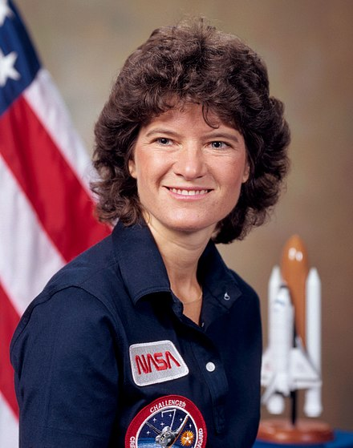
American physicist and astronaut. She joined NASA in 1978 and became the
first American woman in space in 1983. After Ride’s death, her obituary
revealed that her partner of 27 years was Tam O’Shaughnessy. Their
relationship was confirmed by her sister, who said she chose to keep her
personal life private. She is the first known LGBT astronaut.
Lynn Conway (LGBTQ/woman)
Lynn Conway is an American computer scientist, electrical engineer,
inventor, and transgender activist.She is notable for a number of
pioneering achievements, including the Mead & Conway revolution in
VLSI design, which incubated an emerging electronic design automation
industry. She worked at IBM in the 1960s and is credited with the
invention of generalized dynamic instruction handling, a key advance used
in out-of-order execution, used by most modern computer processors to
improve performance.
Audrey Tang (LGBTQ/person of color/woman)
Born in Taiwan, Audrey Tang is a self-taught programmer who was learning
Perl at the age of 12, launching a startup at 15, and already working in
Silicon Valley by 19. Something of a programming wunderkind, she’s best
known for leading the Pugs project to develop the Perl 6 language,
starting the Perl Archive Toolkit (PAT), and her role as an outspoken
advocate for free software and an open web. A transgender woman, Tang
currently devotes most of her energy to political activism and social
causes.
Mae Jemison (woman of color)
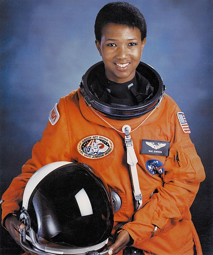
Mae Jemison is an American engineer, physician and NASA astronaut. She
became the first African American woman to travel in space when she went
into orbit aboard the Space Shuttle Endeavour in 1992.
Katherine Johnson, Dorothy Vaughan, Mary Jackson (women of color)
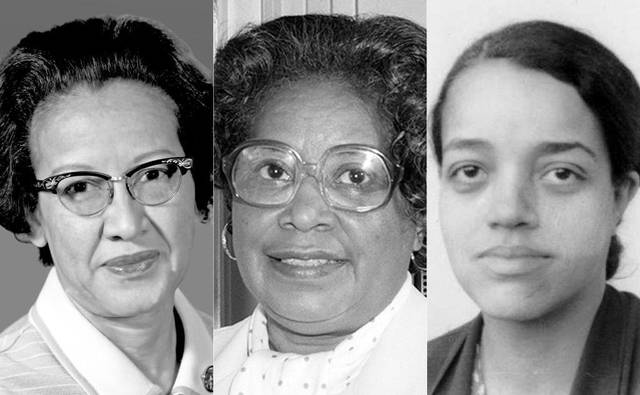
Real life “Hidden Figures,” Dorothy Vaughan, Mary Jackson, and Katherine
Johnson made notable achievements at NASA, overcoming the many obstacles
of the segregated south to work on missions crucial to early space
exploration.
Kimberly Bryant (woman of color)
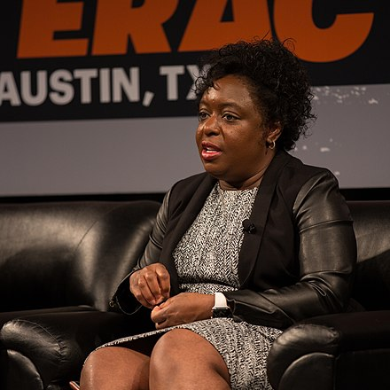
In 2011, Kimberly Bryant launched Black Girls Code, an organization
devoted to teaching young girls of color computer coding and programming
languages, such as Scratch and Ruby on Rails. Through classes and
programs, Bryant and the rest of the Black Girls Code team hope to grow
the number of black women in technology and give underprivileged girls
better opportunities.
Women
Ada Lovelace
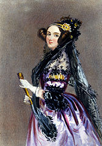
Augusta Ada King-Noel, Countess of Lovelace (née Byron; 10 December 1815 –
27 November 1852) was an English mathematician and writer, chiefly known
for her work on Charles Babbage’s proposed mechanical general-purpose
computer, the Analytical Engine. She was the first to recognise that the
machine had applications beyond pure calculation, and published the first
algorithm intended to be carried out by such a machine. As a result, she
is sometimes regarded as the first to recognise the full potential of a
“computing machine” and the first computer programmer.
Grace Hopper
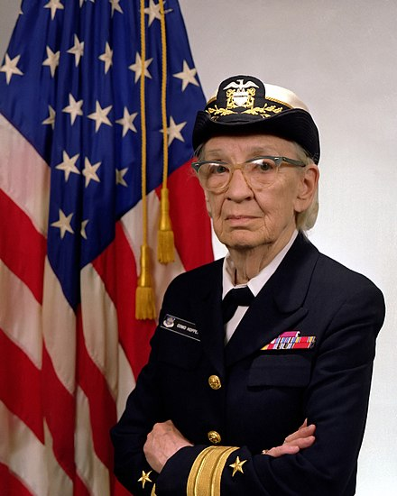
Grace Brewster Murray Hopper was an American computer scientist and United
States Navy rear admiral. One of the first programmers of the Harvard Mark
I computer, she was a pioneer of computer programming who invented one of
the first compiler related tools. She popularized the idea of
machine-independent programming languages, which led to the development of
COBOL, an early high-level programming language still in use today.
Margaret Hamilton
 In a field dominated by men, Hamilton was a trailblazer in the field of
software engineering — incidentally, a term she coined. She not only
played a significant role in making space travel possible, she also forged
a decades-long career as a programmer and even founded her own company,
Hamilton Technologies, Inc.
In a field dominated by men, Hamilton was a trailblazer in the field of
software engineering — incidentally, a term she coined. She not only
played a significant role in making space travel possible, she also forged
a decades-long career as a programmer and even founded her own company,
Hamilton Technologies, Inc.
How Margaret Hamilton Programmed the Apollo 11 Moon Landing
Wikipedia Link
Hedy Lamarr
Famous Hollywood actress and inventor. Not only was she known as one of
the most beautiful women of her day, but she also invented a technology
that enables the mass use of mobile phones and other wireless
communications.
Elizabeth Feinler
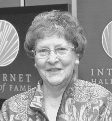
Elizabeth Feinler pioneered and managed first the ARPANET, and then the
Defense Data Network (DDN), network information centers (NIC) under
contract to the Department of Defense (DoD). Both of these early networks
were the forerunners of today’s Internet.
Radia Perlman
Radia Joy Perlman is an American computer programmer and network engineer.
She is most famous for her invention of the spanning-tree protocol (STP),
which is fundamental to the operation of network bridges, while working
for Digital Equipment Corporation. She also made large contributions to
many other areas of network design and standardization, such as link-state
routing protocols.
Yvonne Marie Andrés
Dr. Yvonne Marie Andrés was one of the earliest people to utilize the
Internet to develop and advance global e-learning opportunities for
educators and students.
Tracy LaQuey Parker
Former Chief Technology Office of Cisco Systems, where she founded its
Worldwide Education focus and Advanced Internet Initiatives, and continued
to promote the Internet in academic environments and K-12 schools. She
also led Cisco’s participation in Internet Society activities
internationally. Parker carries the distinction of being the first
individual to successfully sue a spammer, who forged her domain name, in a
lawsuit that helped to advance legal understanding of the digital
frontier.
LGBTQ
Alan Turing
 English computer scientist, mathematician, logician, cryptanalyst,
philosopher, and theoretical biologist. Turing was highly influential in
the development of theoretical computer science, providing a formalisation
of the concepts of algorithm and computation with the Turing machine,
which can be considered a model of a general purpose computer. Turing is
widely considered to be the father of theoretical computer science and
artificial intelligence. Turing was prosecuted in 1952 for homosexual acts
and accepted chemical castration treatment as an alternative to prison.
Turing died in 1954, 16 days before his 42nd birthday, from cyanide
poisoning.
English computer scientist, mathematician, logician, cryptanalyst,
philosopher, and theoretical biologist. Turing was highly influential in
the development of theoretical computer science, providing a formalisation
of the concepts of algorithm and computation with the Turing machine,
which can be considered a model of a general purpose computer. Turing is
widely considered to be the father of theoretical computer science and
artificial intelligence. Turing was prosecuted in 1952 for homosexual acts
and accepted chemical castration treatment as an alternative to prison.
Turing died in 1954, 16 days before his 42nd birthday, from cyanide
poisoning.
Tim Cook
 Tim
Cook is an American business executive and industrial engineer. Cook is
the Chief Executive Officer of Apple Inc., who previously served as the
company’s Chief Operating Officer, under its founder Steve Jobs. On
October 30, 2014, Cook came out as gay, stating “I’m proud to be gay, and
I consider being gay among the greatest gifts God has given me.” As a
result, Cook became the first openly gay CEO on the Fortune 500 list.
Tim
Cook is an American business executive and industrial engineer. Cook is
the Chief Executive Officer of Apple Inc., who previously served as the
company’s Chief Operating Officer, under its founder Steve Jobs. On
October 30, 2014, Cook came out as gay, stating “I’m proud to be gay, and
I consider being gay among the greatest gifts God has given me.” As a
result, Cook became the first openly gay CEO on the Fortune 500 list.
Christopher Strachey
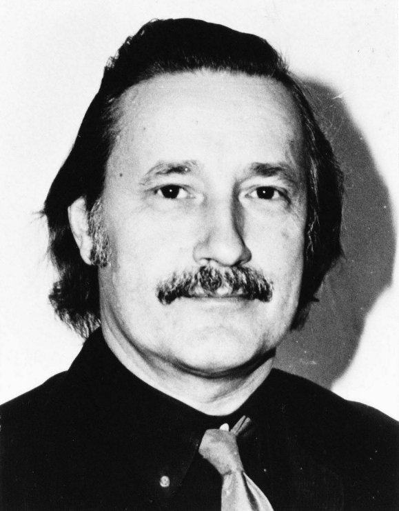
Christopher S. Strachey was a British computer scientist. He was one of
the founders of denotational semantics, and a pioneer in programming
language design. He was a member of the Strachey family, prominent in
government, arts, administration, and academia.
Peter Landin
Peter John Landin was a British computer scientist. He was one of the
first to realize that the lambda calculus could be used to model a
programming language, an insight that is essential to development of both
functional programming and denotational semantics. Landin, who was
bisexual, became involved with the Gay Liberation Front (GLF) during the
early 1970s.
Jon “maddog” Hall
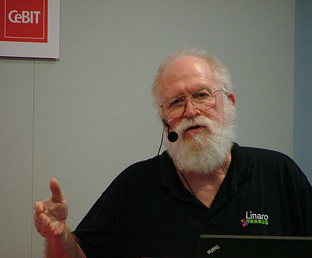
Jon “maddog” Hall is the Board Chair for the Linux Professional Institute,
and CEO of OptDyn, makers of Subutai P2P Cloud Platform. In June 2012, in
honor of Alan Turing, Hall published an article in Linux Magazine
announcing that he is gay.
People of Color
The term “person of color” is used primarily in the United States to
describe any person who is not white.
Frank Greene
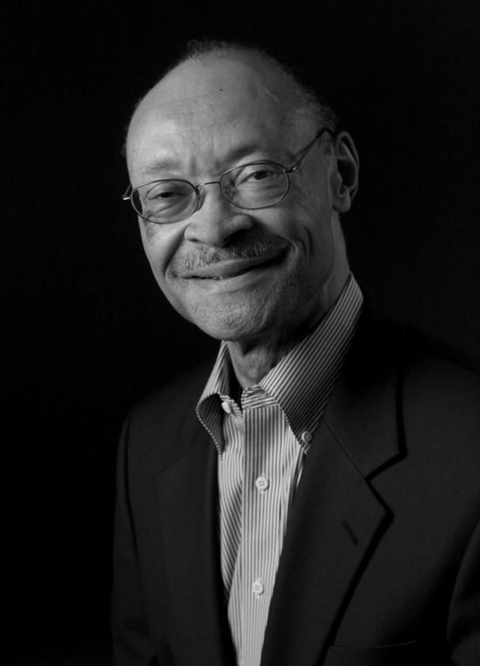
Developed high-speed semiconductor computer-memory systems at Fairchild
Semiconductor R&D Labs in the 1960s. He started two technology
companies and later founded NewVista Capital, a venture firm with a
special focus on minority- and female-headed firms.
Roy Clay Sr
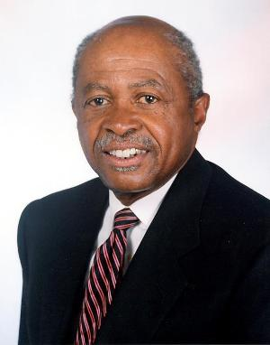
Roy Clay Sr. is known as the Godfather of Silicon Valley. Mr.Clay was at
the cutting edge of computing and technology before Microsoft and Apple
were ever dreamed of. Clay was writing code even before the emergence of
the civil rights era. In 1963 he was employed by Control Data Corporation
working on a computer language known as Fortran. For us laymen Fortran is
a general-purpose, imperative programming language that is especially
suited to numeric computation and scientific computing. Word of Clay’s
work got back to David Packard co-founder of Hewlett-Packard and in 1965
he recruited Clay to set up HP’s computer development business. Packard’s
idea was to build computers that worked with other HP instrumentation
products. Clay was vital to this effort because Packard knew almost
nothing about software.
Mark Dean
 American inventor and computer engineer. He was part of the team that
developed the ISA bus, and he led a design team for making a one-gigahertz
computer processor chip. He holds three of nine PC patents for being the
co-creator of the IBM personal computer released in 1981
American inventor and computer engineer. He was part of the team that
developed the ISA bus, and he led a design team for making a one-gigahertz
computer processor chip. He holds three of nine PC patents for being the
co-creator of the IBM personal computer released in 1981
Guion Bluford Jr
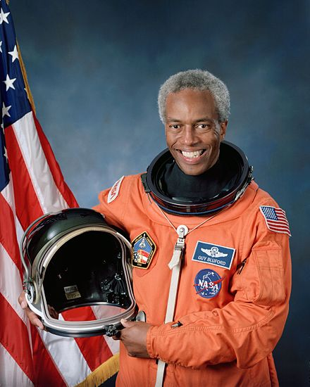
Guion Bluford Jr., Ph.D. is an American aerospace engineer, retired U.S.
Air Force officer and fighter pilot, and former NASA astronaut, who was
the first African American in space. Before becoming an astronaut, he was
an officer in the U.S. Air Force, where he remained while assigned to
NASA, rising to the rank of Colonel.
Philip Emeagwali
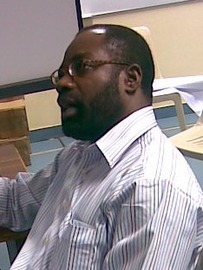
During his doctoral fellowship at the University of Michigan in the 1980s,
Philip Emeagwali researched how to simulate the detection of oil
reservoirs through the use of computers. Originally from Nigeria, he knew
more about oil drilling than many of his contemporaries, and he used more
than 65,000 microprocessors instead of the proposed eight supercomputers,
breaking computation speed records.
John Thompson
When John Thompson was chairman and CEO of computer security software
company Symantec, he was the only African American to hold such a position
at a major tech company. He is now the CEO of Virtual Instruments and is
the only black man on Microsoft’s board of directors.
Gerald Lawson
 In the 1970s, Gerald Lawson created the first video game console with
interchangeable cartridges at Fairchild Semiconductor, paving the way for
the future of gaming. He died in 2011.
In the 1970s, Gerald Lawson created the first video game console with
interchangeable cartridges at Fairchild Semiconductor, paving the way for
the future of gaming. He died in 2011.
Wanda Austin
Wanda Austin is the president and CEO of the Aerospace Corporation, a
non-profit that assists and contributes to national space programs. When
she was senior vice president of the Engineering and Technology Group in
the early 2000s, she led a staff of 1,000 engineers and scientists.
Lester Lyles
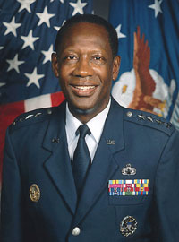
Lester Lyles is the chair of the National Academies Committee on the
rationale and goals of the U.S. civil space program. He holds degrees in
mechanical and nuclear engineering. He formerly served as the Air Force’s
vice chief of staff and as the commander of the Air Force Materiel Command
at Wright-Patterson Air Force Base in Ohio. He was also appointed to
President Obama’s Intelligence Advisory Board.
Satya Nadella
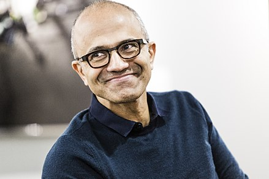
Satya Narayana Nadella is an Indian American business executive. CEO of
Microsoft, and was previously Executive Vice President of Microsoft’s
cloud and enterprise group, responsible for building and running the
company’s computing platforms, developer tools and cloud computing
services.
Sundar Pichai
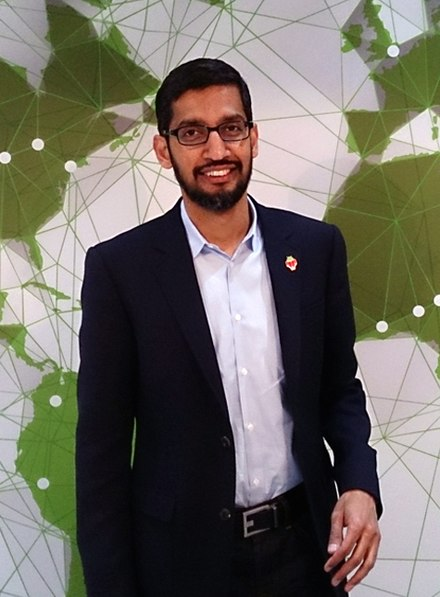
Sundar Pichai is an Indian American business executive and the chief
executive officer (CEO) of Google Inc.
Reference Links
Multiple Categories
Women
LGBTQ
People of Color
Submission Guidelines
-
Ensure the figure is notable.
Use the Wikipedia guidelines. We don’t want to list your neighbor Nancy who happens to fix PCs in
her spare time! ;)
-
For LGBTQ figures, please ensure they are historical and/or publically
“out”
-
If possible, add a Wikipedia link for each figure, and up to two other
links of interest